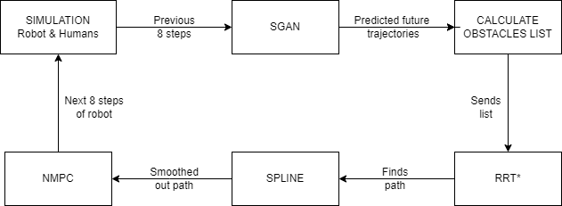

Robot motion planning in dynamic environments is a very challenging problem that requires the robot to generate safe and efficient paths to follow. Where the safety of pedestrians or humans is associated with robot collisions, the factor of the robot’s efficiency plays a pivotal role in minimizing pause time, path navigation, and utilization of resources such as batteries. Keeping these parameters into consideration, and the example of the Starship food delivery robots, which tends to halt if people come in front of it, we have solved this problem by integrating SGANs (Social Generative Adversarial Networks) for human movement predictions and obstacle modeling, traditional motion planning algorithms and approaches such as RRT*/modified RRT* paired with spline interpolation, and motion control using Non-Linear Model Predictive Controller (NMPC) to dynamically avoid obstacles and reach the target location. Our approach and experimental results indicate that the chance of collision drastically drops to approximately 70% in an environment with up to 6 people.
For the baseline, we utilized Social GAN: Socially Acceptable Trajectories with Generative Adversar- ial Networks by Agrim Gupta et al. [1], which assists to predict the motion behavior of pedestrians. The paper uses GANs to overcome the difficulties in approximating intractable probabilistic compu- tation and behavioral inference. The proposed GAN in the SGAN paper is an RNN Encoder-Decoder generator and an RNN-based encoder discriminator with a variety loss to encourage the GAN’s generative network to spread its distribution and cover the space of possible paths while remaining consistent with the observed inputs and a new pooling mechanism which learns a "global" pooling vector that encodes subtle cues for all participants in a scene. This model uses accuracy, speed, and the ability of the model as metrics to generate a variety of socially acceptable trajectories based on experiments on several publicly available real-world crowd datasets
View on GitHub